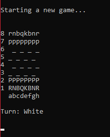

With AI and save/load feature!
This chess game is behaving like a normal chess game, except with several special features! First, this chess game comes with a save/load game feature so that the player can save their progress whenever they want, even in the middle of a game. To encourage the player to practice and experiment, the loading feature is developed to allow the player to revert their moves if they make a mistake. Additionally, this game also comes with an AI opponent that allows the player to practice if they have no one to play with. Of course, this game also comes with two-player mode if they want to test their skills!
My team developed this chess game by using C++ with the observer design pattern. The chess board will be the subject that will notify the observers whenever a player makes a move. The observers will be the chess pieces and the score board whose state will be updated based on the events that come from the game board. I was responsible for developing the chess piece's movement while my teammate worked on the AI and the game board.
See my repository